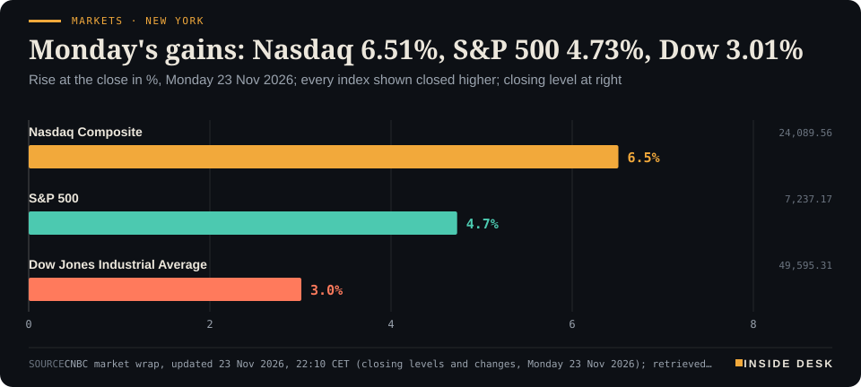
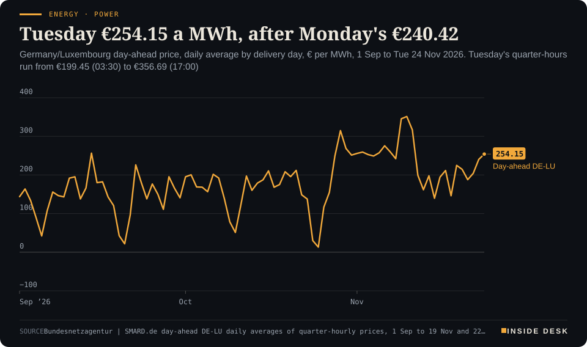
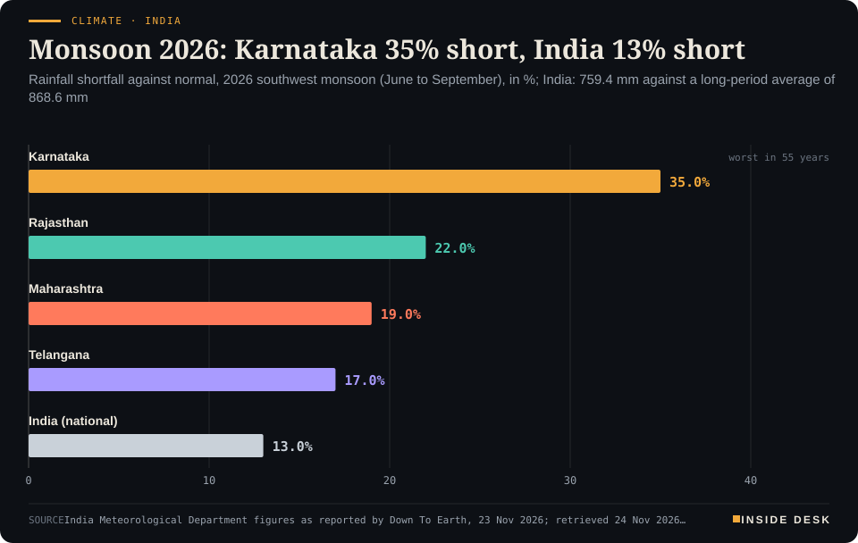

Inside Desk ePaper, Morning ePaper · Tue 24 Nov 2026
Tuesday, 24 November 2026Always free
Inside Desk
Morning ePaperAvailable 06:33 CET · Berlin
Lead · Markets & Macro
A week after refusing, Nvidia's board took Jensen Huang back, and New York bought back Friday. The invoices did not change overnight.
New York bought back Friday and priced a December Fed rise in the same session. Also: oil at a three-month low, India's drought, the budget's interest bill, and a Podium vs Print.
A board changed its mind and a market added a trillion dollars, while the budget, the pay round and the oil tanks kept their own calendars.
Geo-economics · p. 4
Energy & Industry · p. 8
Climate & Weather · p. 14
The day in one sentenceA board changed its mind and a market added a trillion dollars, while the budget, the pay round and the oil tanks kept their own calendars.
ContentsInside Desk · Morning ePaper24 November 2026
New York bought back Friday and priced a December Fed rise in the same session. Also: oil at a three-month low, India's drought, the budget's interest bill, and a Podium vs Print.
11 edition pieces · 11 desks · Available 06:33 CET, 24 November 2026
22 ePaper extras, added , 24 November. They appear only in the ePaper and carry their own time.
The website edition follows at 08:30.
The ePaper rhythm
06:30 Morning ePaper (website edition at 08:30)
18:30 Evening ePaper, updated live until 22:30 with an “Updated” time and a Latest page
Sun 10:00 The Sunday Magazine
Berlin time. Every issue is free.
How to read it
Swipe, use the arrow keys or the page strip. Tap any headline for the reading view. Press / to search, t for contents, +/− to zoom. Download the PDF.
LeadInside Desk · Morning ePaper24 November 2026
Markets & Macro · Lead · 3 min
A week after refusing, Nvidia's board took Jensen Huang back, and New York bought back Friday. The invoices did not change overnight.
You went to bed on Friday with three American indexes in correction. You wake up on Tuesday to find most of that undone, not by a profit warning withdrawn or an order book revised, but by a personnel decision.
The decision. Nvidia’s board voted unanimously to reinstate Jensen Huang as president, chief executive and director, effective immediately, the company said on Monday4. The board said it was “satisfied with respect to Mr. Huang’s candor” and had received input “from senior levels of the United States government”4. Reuters notes that less than a week earlier the chair had said Nvidia would not rehire him; the reversal came after President Donald Trump urged his return3. The board’s investigation into a possible foreign intelligence effort targeting Huang continues, and “will proceed to conclusion”, the company said4.
New York, settled. The S&P 500 rose 4.73% to 7,237.17 and the Nasdaq Composite 6.51% to 24,089.56, both their best days since April 2025; the Dow added 1,447.98 points, or 3.01%, to 49,595.311. Nvidia closed up 31.5%, adding nearly $1 trillion in market value, Reuters reported, though that was not enough to erase all its losses since Huang resigned3. Nine of the eleven S&P 500 sectors rose; technology gained 9.03%, while energy fell 1.32%2.
Markets · New YorkMonday's gains: Nasdaq 6.51%, S&P 500 4.73%, Dow 3.01%Rise at the close in %, Monday 23 Nov 2026; every index shown closed higher; closing level at right

Bar chart of Monday 23 November 2026 closing gains on three US stock indexes, every one higher on the day: Nasdaq Composite up 6.51 percent to 24,089.56, S&P 500 up 4.73 percent to 7,237.17 and Dow Jones Industrial Average up 3.01 percent to 49,595.31. For the S&P 500 and the Nasdaq it was the best day since April 2025.
Source: CNBC market wrap, updated 23 Nov 2026, 22:10 CET (closing levels and changes, Monday 23 Nov 2026); retrieved 24 Nov 2026 · reported figures · CSV
The calculation nobody posts. On Friday the Nasdaq Composite fell 5.28% to 22,617.731. Desk arithmetic: to get back to Thursday’s level, about 23,880, it needed a rise of roughly 5.6%, not 5.28%, because a fall and a rise of the same percentage do not cancel. Monday’s 6.51% was enough for that, with a little to spare; it did not undo the rest of last week’s selling. A good day always sounds bigger than the hole it fills.
Asia, unsettled. By early Tuesday trade, Taiwan’s Taiex was up more than 9%, with TSMC and MediaTek up nearly 10%, AP reported6. Seoul’s Kospi was up 7.19% at 5,047.15 on Tuesday morning after gains triggered a five-minute “sidecar” curb on programme trading, the South China Morning Post said7. Japan’s Nikkei 225 rose 3.9%, with Tokyo Electron up 10.5%6. MSCI’s broadest index of Asia-Pacific shares outside Japan rose 4.6%, Mint reported, citing Reuters8. None of these are closing figures yet.
What did not move. The dollar rose to a more than 19-month high against the euro on Monday; the euro fell 0.7% to $1.0895. Fed funds futures now fully price a 25-basis-point rate rise at the Federal Reserve’s December meeting, up from 89% odds on Friday5. The two-year Treasury yield rose more than 7 basis points to 4.69%9. In other words: the market bought back the AI story and, in the same session, priced a dearer cost of money. Both cannot be good news for long.
Why the desk stays calm. A chief executive matters, and markets are allowed to price that. But an index that loses a tenth of its value in a week and recovers most of it in a day on a board vote is telling you about positioning, not about chips shipped. Nvidia’s next revenue figure will be the same whoever announced it; the governance questions Reuters lists, from the board’s independence to Huang’s Senate hearing, are still open3. The useful habit is to separate the price of a share from the invoices behind it, and to notice that Monday changed one of them.
Not investment advice. Inside Desk does not recommend buying or selling any security.
Geo-economicsInside Desk · Morning ePaper24 November 2026
Geo-economics · 2 min
Iran's Revolutionary Guards said mines hit three tankers in Hormuz. Brent fell anyway. That says more about stocks in tanks than about safety at sea.
Iran’s Revolutionary Guards navy said on Monday that three “violating” oil tankers caught fire after hitting naval mines in the Strait of Hormuz, Reuters reported, citing Press TV1. Iranian state media said one was near the southern coast and two east of the strait, and warned ships against unauthorised routes, Iran International reported2. Separately, the United States is investigating whether Iran was involved in cyberattacks on as many as 50 energy tankers, the Wall Street Journal reported, according to Reuters1.
The price did not jump. Brent posted its lowest close since 31 August on Monday and was down 0.45% at $88.97 a barrel early on Tuesday; US crude slipped to $79.94 after its lowest level since 26 August1. In the previous session Brent fell 3.5% to $89.37, the Economic Times reported3.
The reason is in the inventories. Global observed liquids stocks rose 52 million barrels in October, implying oversupply of 1.7 million barrels a day, Deutsche Bank said, and Libya’s Sharara pipeline has reopened1. ANZ’s Daniel Hynes calls it a move “from acute scarcity towards persistent vulnerability, rather than returning to normal”1.
That phrase is the useful one. A full tank absorbs a headline; a thin one amplifies it. The market is betting the tanks are fuller now. Bets about tanks can be checked every Wednesday.
Geo-economics · Short item · ePaper extra, added
The materials go into wind turbines, power lines and aircraft. The probe covers imports from everywhere, not only China.
The European Commission opened a safeguard investigation on Monday into a surge of imports of composite input materials: glass-fibre reinforcements, epoxy and other manufacturing resins, and chemicals used to make them1. These go into components for wind energy, electricity infrastructure, aerospace and defence, the Commission says, and the surge is driven by “growing global overcapacity” and trade restrictions elsewhere1.
Provisional measures could come four or five months after initiation if the conditions are met, and would need a qualified majority of member states1. Unlike the existing anti-dumping duties on specific products and origins, a safeguard covers imports from all countries1. Euronews reports that Chinese producers had been circumventing earlier duties by shifting production to other countries, and that the EU’s trade deficit with China has reached a record €1 billion a day2.
A safeguard is a blunt instrument, deliberately. It is what you use when the origin keeps moving and the paperwork cannot keep up.
Geo-economics · Brief · ePaper extra, added
EU countries backed the agreement with China on hybrid cars on Friday, clearing it to take effect on 1 December, Euronews reports1. It sets country-specific quotas allowing 350,000 Chinese hybrid vehicles a year onto the EU market for four years, with a fixed annual adjustment of 6%; EU officials expect it to more than halve current Chinese hybrid exports to the bloc1.
Trade Commissioner Maroš Šefčovič is expected to speak to his Chinese counterpart Wang Wentao by video in January, ahead of a meeting in March 20271. Quotas are dull, countable and reversible. That is their virtue.
Markets & MacroInside Desk · Morning ePaper24 November 2026
Markets & Macro · Short item · ePaper extra, added
Asia's chipmakers did what Nvidia did, only faster. The figures are intraday; the closes come later.
Taiwan’s Taiex led Asia on Tuesday morning, up more than 9%, with Taiwan Semiconductor Manufacturing Co. and MediaTek both up nearly 10%, AP reported1. SBS put the Taiex at 40,147.91 at 11:00 local time and said TSMC hit the daily limit of 10% at 2,230 New Taiwan dollars3.
In Seoul the Kospi was up 7.19% at 5,047.15 on Tuesday morning, after the gains triggered a five-minute “sidecar” curb on programme buying, the South China Morning Post reported2. AP later had it up 6.5% at 5,014.41, with Samsung Electronics up 7.5% and SK Hynix 8.6%1. Japan’s Nikkei 225 rose about 3.9%, Tokyo Electron 10.5% and Advantest 14.1%1.
Last week the same exchanges wrote rules to slow the fall. This morning a curb slowed the rise. A rulebook that works in both directions is doing its job.
Intraday figures, not closing levels. Not investment advice.
Markets & Macro · Brief · ePaper extra, added
Nine of the S&P 500’s eleven main sectors ended higher on Monday, Xinhua reported: technology rose 9.03% and communication services 5.18%, while energy fell 1.32% and consumer staples 0.09%1.
Energy’s fall fits the oil price, which closed at a three-month low the same day. A rally that leaves the oil producers behind is a rally in a story, not in the whole economy.
Politics & InstitutionsInside Desk · Morning ePaper24 November 2026
Politics & Institutions · 2 min
From 10:00 today, MPs debate the budget ministry by ministry. The headline is the borrowing. The detail worth watching is the interest bill.
The Bundestag’s 110th sitting starts at 10:00 with the 2027 budget law, according to the published agenda1. Today’s eight items run from the President’s office through finance (10:05–11:50), digital affairs and state modernisation, the environment and climate ministry, health, and finally research, technology and space until 18:501.
The committee version that MPs are debating plans net borrowing of €122.97 billion in the core budget and €210.46 billion including two special funds, €57.84 billion for infrastructure and climate neutrality and €29.65 billion for the Bundeswehr fund, EU Debt Map reports from Bundestag documents2. The budget committee finished its work on 13 November; the final vote is set for 27 November2.
The line to keep is lower down. The committee set €41.39 billion for debt service in the federal debt chapter, €11.20 billion more than planned for 20262. Interest rises because borrowing rises and because each new bond is priced at today’s rates, not yesterday’s.
Speeches this week will argue over priorities. The interest line has no party. It is paid first, every year, before anyone’s priorities.
Politics & Institutions · Short item · ePaper extra, added
Nobody will campaign on it. Everybody will pay it.
In the committee version of the 2027 budget, the federal debt chapter sets aside €41.39 billion for debt service, about €385 million less than in the government’s draft but €11.20 billion more than planned for 2026, EU Debt Map reports from Bundestag documents1. Interest on the Bundeswehr special fund sits in that fund’s own plan, so the figure is not the whole bill1.
The two special funds together bring €87.49 billion of planned borrowing, about 42% of the €210.46 billion total1. Germany’s general government debt stood at 63.4% of output at the end of June 2026, according to Eurostat1.
Desk arithmetic: the rise in debt service alone, €11.20 billion, is about 27% of the €41.39 billion total. Choices about relief are made inside the space the interest line leaves.
The SPD and CDU groups in Saarland’s state parliament view positively federal justice minister Stefanie Hubig’s plan to add gender-specific or other contemptuous motives to the murder paragraph, SR reported1. SPD group leader Ulrich Commerçon said killings of women because they are women must be clearly reflected in criminal law; CDU group leader Stephan Toscani said preventing femicides, for example by enforcing restraining orders, was even more important; AfD group leader Josef Dörr said the existing rules were sufficient1.
Toscani’s point deserves the attention: a better paragraph punishes after the fact; a checked restraining order acts before it.
Psychology & BehaviourInside Desk · Morning ePaper24 November 2026
Psychology & Behaviour · 2 min
A University of Bath survey asks what students did when they were struggling. The answer is honest; the sample is small; the use is already there.
One in four students responding to a University of Bath survey said they had used generative AI for mental-health support in the previous six months, according to a peer-reviewed study in JMIR Mental Health published on Monday1. Among students with very low wellbeing, more than a third had done so1. Students used the tools for advice when distressed, to understand their mental health and as a personal therapist or coach1.
Read the method first. 2,020 students took part, 9.1% of those invited, at a single university, and the researchers say it may not represent students across the UK1. A separate US survey of 67,477 students at 107 colleges found 7% had received counselling or emotional support from an AI chatbot in the past year, the first time it asked, Inside Higher Ed reported2.
“The reality is that people are already using AI for their mental health, whether or not universities and healthcare services are ready for it,” said lead author Jeffrey Lambert1. Bath has published guidance on benefits, risks and when to seek further help1.
That is the calm response: not a ban, not a celebration, but a leaflet that says what the tool cannot do and where the human help is. A risk with instructions is smaller than a risk without them.
Psychology & Behaviour · Short item · ePaper extra, added
Depression and anxiety fell slightly. Disordered eating did not.
More than four in ten US college students are flourishing, the highest share in a decade, according to the 2025–26 Healthy Minds Study of 67,477 students at 107 institutions, Inside Higher Ed reports1. On the eight-item Flourishing Scale, 43% had positive mental health, up from 38% the year before1.
Depression symptoms were reported by 34%, down from 37% but still above about 25% in 2015–16; anxiety by 30%, down from 32%1. Stigma eased: 5% said they would think less of someone who had received treatment, down from 7%1. One line did not move: 28% reported symptoms of disordered eating in both years1.
“To have decreases in loneliness, increases in flourishing, to see decreases in perceived stigma—that’s all moving in a positive direction,” said co-author Justin Heinze1. Slow improvement is still improvement; it just does not trend.
An estimated 891,000 workers in Great Britain suffered from work-related stress, depression or anxiety in 2025/26, resulting in 18.2 million working days lost, according to the Health and Safety Executive, which published new research on Monday1. Stress, depression or anxiety accounted for 49% of all work-related ill health and 46% of days lost to it1.
The research names the hazards plainly: excessive demands, low control, poor support, conflict, role uncertainty and organisational change1. “Employers are required by law to protect their employees from harm,” said the HSE’s Mike Calcutt, and that includes psychosocial hazards1. A risk assessment is a boring document. It is also how a hazard stops being a personality trait.
Energy & IndustryInside Desk · Morning ePaper24 November 2026
Energy & Industry · 2 min
Oil is near a three-month low, though a dearer dollar takes back a slice. Germany's power price for today went the other way.
Brent crude was down 0.45% at $88.97 a barrel early on Tuesday, after its lowest close since 31 August on Monday; US crude was at $79.941.
The euro moved the other way. It fell 0.7% to $1.089 on Monday, as the dollar reached a more than 19-month high on bets of a Federal Reserve rate rise in December2.
Desk arithmetic: at $88.97 and $1.089, a barrel of Brent costs about €81.70. Before Monday’s 0.7% fall the euro stood at roughly $1.0967; at that rate the same dollar price would have been about €81.12. The currency took back roughly 58 cents a barrel.
At home, the other bill is not sliding. Germany’s day-ahead power price for delivery today averages €254.15 per megawatt hour, up from €240.42 on Monday, with quarter-hours from €199.45 at 03:30 to €356.69 at 17:00, according to Energy-Charts data from the Bundesnetzagentur’s SMARD platform3.
Energy · PowerTuesday €254.15 a MWh, after Monday's €240.42Germany/Luxembourg day-ahead price, daily average by delivery day, € per MWh, 1 Sep to Tue 24 Nov 2026. Tuesday's quarter-hours run from €199.45 (03:30) to €356.69 (17:00)

Line chart of the daily average German-Luxembourg day-ahead electricity price from 1 September to 24 November 2026, in euros per megawatt hour. Prices mostly ran between about €100 and €210 in September and October, climbed above €250 from late October, peaked at €351.48 on Tuesday 10 November, fell to €139.70 on Sunday 15 November, were €204.08 on Sunday 22 and €240.42 on Monday 23 November, and stand at €254.15 for the latest delivery day, Tuesday 24 November.
Source: Bundesnetzagentur | SMARD.de day-ahead DE-LU daily averages of quarter-hourly prices, 1 Sep to 19 Nov and 22 Nov 2026 retrieved 22 Nov 2026; 20, 21 Nov retrieved 23 Nov; 23 and 24 Nov via Fraunhofer ISE Energy-Charts (data: Bundesnetzagentur | SMARD.de), retrieved 24 Nov 2026, 05:21 CET · CC BY 4.0 · CSV
Oil follows tankers and central banks; power follows wind, cold and gas.
Energy & Industry · Short item · ePaper extra, added
Supply is coming back from places that were shut. The market reads stocks, not speeches.
Global observed liquids inventories rose 52 million barrels in October, implying oversupply of 1.7 million barrels a day, Deutsche Bank said in a research note cited by Reuters1.
Supply is also recovering in Libya: the Sharara pipeline has reopened and oil has begun flowing into storage tanks at the Akakus facility in Zawiya, the National Oil Corporation’s chairperson told Reuters1. …
Energy & Industry · Brief · ePaper extra, added
Environment minister Carsten Schneider vowed on Monday that Germany would keep moving away from fossil fuels despite the failure of the COP31 declaration in Antalya, DW reports1. “We will clearly maintain our course on climate protection in Europe and Germany,” he said in Potsdam, “but above all one that makes us independent of oil and gas”1.
His ministry’s 2027 budget is debated in the Bundestag today between 13:40 and 15:252. Courses are kept in budget lines, not in communiqués.
Money, FX & CommitteesInside Desk · Morning ePaper24 November 2026
Money, FX & Committees · Podium vs Print · 2 min
New York Fed President John Williams says getting inflation back to 2% is not optional. The latest print on the Fed's preferred gauge is what he is talking to.
Podium
“getting inflation back to 2 percent is 100 percent essential”
John C. Williams, President, Federal Reserve Bank of New York, Remarks at the University of Mount Saint Vincent, Bronx, 23 November 2026
Print3.6%
September's PCE reading showed an increase of 0.5% for the month, which put the annual inflation rate at 3.6%, the largest monthly gain since March.
September PCE price index, as reported by CNBC, 23 November 2026
The podium. “The economy is strong and resilient, despite large shocks and elevated uncertainty,” John Williams said on Monday. “But getting inflation back to 2 percent is 100 percent essential”1. He put inflation at about 3½% and named three causes: tariffs, energy and supply disruptions from the conflicts in the Middle East and elsewhere, and demand for AI-related goods1. “Monetary policy cannot move ships or reopen pipelines and refineries,” he said, but it must stop those shocks becoming persistent1.
The print. The Fed’s preferred gauge rose 0.5% in September, putting the annual rate at 3.6%, the largest monthly gain since March, CNBC notes2. Williams himself expects about 3½% this year and inflation “just above 2 percent” next year, reaching 2% in 20281.
The gap. The speech and the number agree; that is the news. Williams did not use the word “hike”, but futures traders now fully price a quarter-point rise on 9 December, up from 89% on Friday3. When the dovish wing of a committee says “100 percent”, the market does not wait for the minutes.
The dull part. Williams’s encouraging lines get fewer headlines: housing services inflation has slowed, wage growth is not adding pressure, and longer-term expectations “remain well anchored”1. That is where inflation is defeated: in rent contracts and pay slips, not on podiums.
Money, FX & Committees · Short item · ePaper extra, added
The dollar index rose 0.62%. The yen and sterling weakened too.
The dollar hit a more than 19-month high against the euro on Monday, CNBC reported, citing Reuters; the euro fell 0.7% to $1.089 and the dollar index rose 0.62% to 104.451. The dollar also gained 0.37% to 159.14 yen, while sterling fell 0.45% to $1.30221.
Money, FX & Committees · Brief · ePaper extra, added
The two-year Treasury yield rose more than 7 basis points to 4.69% on Monday, the 10-year about 2 basis points to 4.932%, and the 30-year was little changed at 5.299%, CNBC reported1. “Assets that had offered a measure of safety last week have retreated today,” said Macquarie’s Thierry Wizman1.
Wednesday brings the revised third-quarter GDP figure and October’s PCE inflation, for which economists polled by Dow Jones expect a monthly rise of 0.3%1. The short end moves first because it listens to the committee most closely.
Ordinary & Inherited LifeInside Desk · Morning ePaper24 November 2026
Ordinary & Inherited Life · 2 min
IG Metall counts its warning strikes; employers call them an escalation. Talks resume on Wednesday in Mannheim. Here is the ledger on a payslip.
IG Metall says 340,000 employees from 240 companies took part in all-day warning strikes in the metal and electrical industries up to and including Monday; new negotiations are due on Wednesday in Mannheim, junge Welt reports1. Mercedes-Benz confirmed to Euronews that its plants were affected; the employers’ association Südwestmetall called the 24-hour strikes an “unnecessary escalation”2.
The union is seeking a 5% rise over one year for 3.7 million workers2. Employers offer a one-off payment in July 2027 worth 1% of gross annual pay and a 1.3% rise from July 20282.
Desk arithmetic, on a gross salary of €3,500 a month (€42,000 a year): 5% would be €175 a month, €2,100 a year. The employer offer is a single €420 in July 2027, then €45.50 a month from July 2028. Over the 24 months from January 2027, the union’s demand would add about €4,200 gross if it applied from the start; the offer adds €420 plus six months of €45.50, about €693. Before tax and contributions, and only for covered sectors.
The gap is wide, but notice where it sits: in dates more than in rates. Pay deals are usually closed by moving a start month, not a decimal.
Ordinary & Inherited Life · Short item · ePaper extra, added
The metal pay round is one negotiation. Several company-level ones run alongside it.
The warning strikes reach companies that are also negotiating cuts. Mercedes-Benz is seeking €800 million in annual savings in Germany, Handelsblatt reported, and longer working hours without extra pay were among options discussed, according to SWR, Euronews notes1. BMW previously sought to cut nearly 8,000 jobs through voluntary severance, according to Münchner Merkur1.
Volkswagen, in separate talks with IG Metall covering about 120,000 employees, is seeking a two-year pay freeze and more flexible working hours, according to Reuters1. Friday’s nationwide walkouts drew 151,000 workers, the union said1.
Read the percentages in the regional pay round against that background. For many workers the question is not only how much more, but whether the job and the hours stay the same.
Ordinary & Inherited Life · Brief · ePaper extra, added
Police are investigating suspected aggravated arson after a fire at a hospital in Berlin’s Lichtenberg district on Sunday evening; investigators believe a patient set fire to his bed in a first-floor room, DW reports1. Fifteen people were injured, among them a nurse and the suspect, who were treated for smoke inhalation, and 13 others with minor injuries; smoke spread and parts of the hospital were evacuated1.
Firefighters put out the flames1. Evacuating patients who cannot walk is one of the hardest things a hospital has to practise. It is practised for exactly this kind of Sunday evening.
Tech & ComputeInside Desk · Morning ePaper24 November 2026
Tech & Compute · 2 min
The headline was the return. The paragraph worth reading was the plumbing the board promised to build around it.
Nvidia’s board reinstated Jensen Huang on 22 November, effective immediately, its filing with the US Securities and Exchange Commission says; Colette Kress continues as chief financial officer2. The press release adds the parts that will matter longer than Monday’s share price1.
First, the investigation. A committee of independent directors, with independent counsel, is looking into “recent reporting that Mr. Huang has been the target of a foreign intelligence effort”; the board “reiterated that the committee’s investigation will proceed to conclusion”, and Huang supports it1.
Second, a new National Security and Export Control Committee of independent directors to oversee trade compliance and national security risks1. Third, a search for a new Chief Compliance Officer reporting to the board’s nominating and governance committee1. Nvidia says it will keep cooperating with government investigations1.
Governance experts told Reuters the reversal “raises questions about its independence”3. That is fair. The answer, if there is one, will be in how those committees work: who sits on them, what they publish, and whether they ever say no. Watch the boring appointments; they are where the next crisis is caught or missed.
Tech & Compute · Short item · ePaper extra, added
Robotics and defence lead. A study from the start-up association calls it a success for the location.
Investment in German “deep tech” start-ups, in fields such as robotics and defence, is set to rise from €2.9 billion last year to €8.1 billion this year, according to a study by the German Start-up Association and the Joachim Herz Foundation presented on Monday, DW reports1. The study described the rise as a “major success for Germany as a business location”1.
Desk arithmetic: €8.1 billion is about 2.8 times €2.9 billion. The figure for this year is an estimate made before the year is over, so it is a prediction, not a count. The test comes later, in invoices: how many of these companies sell something, to whom, and at what price.
Tech & Compute · Brief · ePaper extra, added
Jensen Huang has agreed to testify at a public US Senate hearing on 3 December, the Senate Banking Committee said, according to Reuters1. Lawmakers across parties objected to his reinstatement and called for the Chip Security Act, a bill to stop legally exported advanced chips being diverted to China1.
Reuters also reported that Huang’s exit had threatened Nvidia’s China business, with some customers there cancelling or hesitating over orders1. Nvidia faces several investigations and a shareholder lawsuit, Reuters notes1. A rehiring is one meeting. Hearings, audits and lawsuits are many, and they run to their own timetable.
Health & CareInside Desk · Morning ePaper24 November 2026
Health & Care · 2 min
Measles is preventable with two doses. Bangladesh's count shows what happens when the doses stop arriving.
Nine more children died with measles-like symptoms in Bangladesh in the 24 hours to 08:00 local time on Sunday, bringing confirmed and suspected measles-linked deaths in 2026 to 1,352, according to the Directorate General of Health Services as reported by United News of Bangladesh1. Of those, 105 are confirmed and 1,247 suspected1.
The case count is larger still: 256,586 suspected cases and 26,136 laboratory-confirmed infections this year1. Since 15 March, 229,530 patients with suspected measles have been admitted to hospital; 220,705 have recovered1.
The cause is being argued in politics. Former prime minister Sheikh Hasina alleges that measles-rubella vaccine stocks ran out in March 2026 and that a supplementary campaign was not launched on time; she blames both the former interim administration and the current government1. Those are her claims, not established findings.
The general lesson is not in dispute. Measles spreads where coverage falls below the line needed for community protection, and the gap opens long before the first case: in a procurement file, a missed tender, a cold-chain delay. The repair is equally unglamorous: stock, schedule, and a campaign that turns up when it says it will.
Health & Care · Short item · ePaper extra, added
Tedros is on a three-day visit. The shortages are in syringes, gauze, vaccines and spare parts.
WHO Director-General Tedros Adhanom Ghebreyesus toured a darkened paediatric cardiology centre in Cuba on Monday, on a three-day visit at the invitation of health authorities, AP reports1. Hospitals across the island face shortages of syringes, gauze, vaccines and anaesthetics, and lack spare parts for haemodialysis and CT machines1.
A government report released in June said survival among children with cancer had fallen to 65% from 85% before the energy blockade began in January1. Analysts blame fuel shortages they link to tightened US sanctions on the energy sector1. “I want to use this visit to better understand the challenges you face,” Tedros was quoted as saying by state media1.
Health systems rest on electricity and spare parts before they rest on doctors. Cuba is showing what happens when the dull layer goes first.
Health & Care · Brief · ePaper extra, added
The Bundestag debates the health ministry’s 2027 budget today from 15:25 to 17:10, between the environment and climate ministry and research, technology and space, according to the published agenda1.
Much of what this desk covers runs through that one chapter. The debate will be about money; the follow-up comes in the rules written afterwards.
Security & OrderInside Desk · Morning ePaper24 November 2026
Security & Order · 2 min
Identical emails reached schools across Germany on Monday. The police found nothing. The disruption was the point.
Bomb threats reached hundreds of schools across Germany on Monday morning by email, more than 450 of them in Baden-Württemberg alone, according to the Freiburg police headquarters, tagesschau.de reported1. Around 260 schools in Saxony-Anhalt were affected, and there were reports from Berlin, Bavaria, Hamburg, North Rhine-Westphalia and other Länder1. Police said the wording was the same and there was no indication of a real danger1.
Some schools were evacuated as a precaution; many held lessons as normal1. Investigations for disturbing the public peace by threatening crimes have been opened1. A spokesperson for the federal interior ministry said the incidents fit into “a generally high abstract threat situation” but that schools and authorities are prepared1.
The wave is not only German. Schools in Denmark received threats on Monday; in recent weeks Ireland, the UK and Italy had them too, with 6,000 schools in Italy, and the emails there apparently came from a Taiwanese account, according to findings so far1.
The useful observation is how much the response has become routine. A police force in Ulm said it took no specific action “because it quickly became clear that these were fake reports”1. Practised calm is a security measure in its own right.
Security & Order · Short item · ePaper extra, added
Pistorius also signed a letter of intent on Ukraine's Delta battle-management system, which the Bundeswehr wants to use too.
Germany will produce the Ukrainian “Babka” reconnaissance drone at home, defence minister Boris Pistorius said after meeting his Ukrainian counterpart in Berlin; Germany is providing about €34 million to build production capacity, tagesschau.de reports1. The German company Wingcopter and Ukraine’s Shadow Flytech have set up a joint venture for it1.
The two countries also signed a letter of intent on further developing Ukraine’s “Delta” battle-management system, which merges separate pictures into one real-time situation picture and which the Bundeswehr is to use in future1. The announcement fills in an agreement Chancellor Merz and President Zelenskyy signed in April1.
This is the less visible side of support: not a delivery, but a production line, and software learned under fire coming the other way.
Security & Order · Brief · ePaper extra, added
After the suspected Ukrainian attack on a Russian freighter in the Gulf of Finland, Pistorius said Ukraine has the right to strike military targets in Russia but bears “a special responsibility”: “The war must not spread to the Baltic Sea” (translated), tagesschau.de reports1. He praised Finland for acting “very wisely and very calmly” (translated)1.
On reports that Russia may launch a nuclear-armed satellite, he urged calm: it was unclear what weapons were involved, and too early to speculate publicly1. Chancellor Merz had called the reports “shocking” (translated)1. A minister who declines to speculate is doing his job.
Climate & WeatherInside Desk · Morning ePaper24 November 2026
Climate & Weather · 2 min
The rains ended weeks ago. The shortfall is now showing in soil moisture and in the winter crop.
Nearly half of India, 47.2% of its area, is in some category of drought, according to the India Drought Monitor run by IIT Gandhinagar, up from 46.6% a week earlier, Down To Earth reports1. IIT Bombay’s forecasting system expects agricultural drought to persist across parts of Rajasthan, Maharashtra, Karnataka, western Madhya Pradesh, Telangana and south-western Andhra Pradesh1.
The cause is the monsoon that ended in September. India received 759.4 mm of rain against a long-period average of 868.6 mm, a deficit of about 13%, making 2026 the fourth-driest monsoon since 2001, according to the India Meteorological Department1. Karnataka’s deficit of 35% was its worst in 55 years1.
Climate · IndiaMonsoon 2026: Karnataka 35% short, India 13% shortRainfall shortfall against normal, 2026 southwest monsoon (June to September), in %; India: 759.4 mm against a long-period average of 868.6 mm

Bar chart of rainfall shortfalls against normal in the 2026 southwest monsoon: Karnataka 35 percent short, its worst in 55 years; Rajasthan 22 percent; Maharashtra 19 percent; Telangana 17 percent; India as a whole 13 percent, 759.4 millimetres against a long-period average of 868.6 millimetres. All bars are shortfalls.
Source: India Meteorological Department figures as reported by Down To Earth, 23 Nov 2026; retrieved 24 Nov 2026 · reported figures · CSV
The effect is now in the fields. By 13 November farmers had sown 17.83 million hectares of rabi (winter) crops, against 20.10 million a year earlier, a fall of about 11.3%1. Six states have declared districts drought-affected, though the monitors show dry conditions well beyond them1.
That is the forward-looking part. …
Climate & Weather · Short item · ePaper extra, added
Forecasters gave months of warning. The money has not kept pace.
When disaster-risk ministers of the Southern African Development Community met on 12 November, they were told about 41 million people could be at risk in the coming rainfall and cyclone season; costed plans need about $1.85 billion, with about $241 million available, a shortfall of about $1.61 billion, Nature Africa reports1. …
Climate & Weather · Short item · ePaper extra, added
More than half the provinces faced severe drought in the past year, PBS reports from Bamyan.
More than half of Afghanistan’s provinces have faced severe drought in the past year, and aquifer stores have dropped by more than a quarter, PBS News Hour reported from Bamyan province; NGOs have warned the country could run out of groundwater by 20301. UN documentation says half the residents of Yakawlang district have left this year1.
Charts and dataInside Desk · Morning ePaper24 November 2026
Charts and data
Energy · PowerTuesday €254.15 a MWh, after Monday's €240.42Germany/Luxembourg day-ahead price, daily average by delivery day, € per MWh, 1 Sep to Tue 24 Nov 2026. Tuesday's quarter-hours run from €199.45 (03:30) to €356.69 (17:00)
Line chart of the daily average German-Luxembourg day-ahead electricity price from 1 September to 24 November 2026, in euros per megawatt hour. Prices mostly ran between about €100 and €210 in September and October, climbed above €250 from late October, peaked at €351.48 on Tuesday 10 November, fell to €139.70 on Sunday 15 November, were €204.08 on Sunday 22 and €240.42 on Monday 23 November, and stand at €254.15 for the latest delivery day, Tuesday 24 November.
Source: Bundesnetzagentur | SMARD.de day-ahead DE-LU daily averages of quarter-hourly prices, 1 Sep to 19 Nov and 22 Nov 2026 retrieved 22 Nov 2026; 20, 21 Nov retrieved 23 Nov; 23 and 24 Nov via Fraunhofer ISE Energy-Charts (data: Bundesnetzagentur | SMARD.de), retrieved 24 Nov 2026, 05:21 CET · CC BY 4.0 · CSV
Latest values
Series
Value
Date
Chart
Day-ahead DE-LU
254.15
24 Nov 2026
Tuesday €254.15 a MWh, after Monday's €240.42
Last data point of each series in the charts above, from the Inside Desk data archive. Sources under each chart.
Back pageInside Desk · Morning ePaper24 November 2026
Before you close the tab
The day in one sentence
A board changed its mind and a market added a trillion dollars, while the budget, the pay round and the oil tanks kept their own calendars.
One thing you can do this week
This week, when a share or an index moves a lot in one day, ask one plain question before you react: what changed on an invoice, a payroll or a delivery note? Most days the honest answer is nothing yet. Write the question down; check it again on Friday.
A habit, not advice.
What went right
More than four in ten US college students are now flourishing, the highest share in a decade: 43% in the 2025–26 Healthy Minds Study of 67,477 students, up from 38% a year earlier 1. Depression symptoms fell to 34% from 37%, anxiety to 30% from 32%, and fewer students said they would think less of someone who had received treatment 1. Slow, measured, and moving the right way 1.
In euros at home
Brent was $88.97 a barrel early on Tuesday 2, and the euro was $1.089 after Monday's fall 3. Desk arithmetic: that is about €81.70 a barrel. A barrel holds 159 litres, so crude costs about 51 cents a litre in euros, before refining, transport, taxes and the retailer's margin. Before Monday's 0.7% fall in the euro, the same dollar price would have been about €81.12: the currency took back roughly 58 cents a barrel.
Desk arithmetic on the cited figures.
Small words
Sidecar
A short, automatic pause on programme trading when an index moves sharply, used in South Korea. On Tuesday morning the Kospi's gains triggered a five-minute sidecar curb on programme buying 4. It does not stop the market; it slows the machines for a few minutes so that people can catch up.
Commentary for information only. Not investment, legal, tax, medical or political advice. Inside Desk is free and reader-supported. Every number is sourced in the piece it appears in.
This issue has been updated.
All articles in this edition
Markets & Macro · 3 min read
Plus 31.5% for Nvidia: a board meeting priced at a trillion dollars
A week after refusing, Nvidia's board took Jensen Huang back, and New York bought back Friday. The invoices did not change overnight.
You went to bed on Friday with three American indexes in correction. You wake up on Tuesday to find most of that undone, not by a profit warning withdrawn or an order book revised, but by a personnel decision.
The decision. Nvidia’s board voted unanimously to reinstate Jensen Huang as president, chief executive and director, effective immediately, the company said on Monday4. The board said it was “satisfied with respect to Mr. Huang’s candor” and had received input “from senior levels of the United States government”4. Reuters notes that less than a week earlier the chair had said Nvidia would not rehire him; the reversal came after President Donald Trump urged his return3. The board’s investigation into a possible foreign intelligence effort targeting Huang continues, and “will proceed to conclusion”, the company said4.
New York, settled. The S&P 500 rose 4.73% to 7,237.17 and the Nasdaq Composite 6.51% to 24,089.56, both their best days since April 2025; the Dow added 1,447.98 points, or 3.01%, to 49,595.311. Nvidia closed up 31.5%, adding nearly $1 trillion in market value, Reuters reported, though that was not enough to erase all its losses since Huang resigned3. Nine of the eleven S&P 500 sectors rose; technology gained 9.03%, while energy fell 1.32%2.
Markets · New YorkMonday's gains: Nasdaq 6.51%, S&P 500 4.73%, Dow 3.01%Rise at the close in %, Monday 23 Nov 2026; every index shown closed higher; closing level at right
Bar chart of Monday 23 November 2026 closing gains on three US stock indexes, every one higher on the day: Nasdaq Composite up 6.51 percent to 24,089.56, S&P 500 up 4.73 percent to 7,237.17 and Dow Jones Industrial Average up 3.01 percent to 49,595.31. For the S&P 500 and the Nasdaq it was the best day since April 2025.
Source: CNBC market wrap, updated 23 Nov 2026, 22:10 CET (closing levels and changes, Monday 23 Nov 2026); retrieved 24 Nov 2026 · reported figures · CSV
The calculation nobody posts. On Friday the Nasdaq Composite fell 5.28% to 22,617.731. Desk arithmetic: to get back to Thursday’s level, about 23,880, it needed a rise of roughly 5.6%, not 5.28%, because a fall and a rise of the same percentage do not cancel. Monday’s 6.51% was enough for that, with a little to spare; it did not undo the rest of last week’s selling. A good day always sounds bigger than the hole it fills.
Asia, unsettled. By early Tuesday trade, Taiwan’s Taiex was up more than 9%, with TSMC and MediaTek up nearly 10%, AP reported6. Seoul’s Kospi was up 7.19% at 5,047.15 on Tuesday morning after gains triggered a five-minute “sidecar” curb on programme trading, the South China Morning Post said7. Japan’s Nikkei 225 rose 3.9%, with Tokyo Electron up 10.5%6. MSCI’s broadest index of Asia-Pacific shares outside Japan rose 4.6%, Mint reported, citing Reuters8. None of these are closing figures yet.
What did not move. The dollar rose to a more than 19-month high against the euro on Monday; the euro fell 0.7% to $1.0895. Fed funds futures now fully price a 25-basis-point rate rise at the Federal Reserve’s December meeting, up from 89% odds on Friday5. The two-year Treasury yield rose more than 7 basis points to 4.69%9. In other words: the market bought back the AI story and, in the same session, priced a dearer cost of money. Both cannot be good news for long.
Why the desk stays calm. A chief executive matters, and markets are allowed to price that. But an index that loses a tenth of its value in a week and recovers most of it in a day on a board vote is telling you about positioning, not about chips shipped. Nvidia’s next revenue figure will be the same whoever announced it; the governance questions Reuters lists, from the board’s independence to Huang’s Senate hearing, are still open3. The useful habit is to separate the price of a share from the invoices behind it, and to notice that Monday changed one of them.
Not investment advice. Inside Desk does not recommend buying or selling any security.
Desk comment A company is worth what its customers pay it. On Monday it was worth what one man's return was thought to be worth. Those are different numbers, and only one of them is audited.
Three tankers on fire, oil at a three-month low: the market that has stopped flinching
Iran's Revolutionary Guards said mines hit three tankers in Hormuz. Brent fell anyway. That says more about stocks in tanks than about safety at sea.
Iran’s Revolutionary Guards navy said on Monday that three “violating” oil tankers caught fire after hitting naval mines in the Strait of Hormuz, Reuters reported, citing Press TV1. Iranian state media said one was near the southern coast and two east of the strait, and warned ships against unauthorised routes, Iran International reported2. Separately, the United States is investigating whether Iran was involved in cyberattacks on as many as 50 energy tankers, the Wall Street Journal reported, according to Reuters1.
The price did not jump. Brent posted its lowest close since 31 August on Monday and was down 0.45% at $88.97 a barrel early on Tuesday; US crude slipped to $79.94 after its lowest level since 26 August1. In the previous session Brent fell 3.5% to $89.37, the Economic Times reported3.
The reason is in the inventories. Global observed liquids stocks rose 52 million barrels in October, implying oversupply of 1.7 million barrels a day, Deutsche Bank said, and Libya’s Sharara pipeline has reopened1. ANZ’s Daniel Hynes calls it a move “from acute scarcity towards persistent vulnerability, rather than returning to normal”1.
That phrase is the useful one. A full tank absorbs a headline; a thin one amplifies it. The market is betting the tanks are fuller now. Bets about tanks can be checked every Wednesday.
Desk comment A risk the market can see is a risk it has already been paid for. The dangerous ones are those still under the waterline.
Glass fibre, resins, nine to 11 months: Brussels opens a safeguard case on composites
The materials go into wind turbines, power lines and aircraft. The probe covers imports from everywhere, not only China.
The European Commission opened a safeguard investigation on Monday into a surge of imports of composite input materials: glass-fibre reinforcements, epoxy and other manufacturing resins, and chemicals used to make them1. These go into components for wind energy, electricity infrastructure, aerospace and defence, the Commission says, and the surge is driven by “growing global overcapacity” and trade restrictions elsewhere1.
Provisional measures could come four or five months after initiation if the conditions are met, and would need a qualified majority of member states1. Unlike the existing anti-dumping duties on specific products and origins, a safeguard covers imports from all countries1. Euronews reports that Chinese producers had been circumventing earlier duties by shifting production to other countries, and that the EU’s trade deficit with China has reached a record €1 billion a day2.
A safeguard is a blunt instrument, deliberately. It is what you use when the origin keeps moving and the paperwork cannot keep up.
Appears only in the ePaper · Commentary for information only. Not advice.
Geo-economics · Brief · ePaper extra, added
350,000 hybrids a year, 6% a year more: the EU–China car quota starts on 1 December
Member states approved it on Friday. It covers hybrids only.
EU countries backed the agreement with China on hybrid cars on Friday, clearing it to take effect on 1 December, Euronews reports1. It sets country-specific quotas allowing 350,000 Chinese hybrid vehicles a year onto the EU market for four years, with a fixed annual adjustment of 6%; EU officials expect it to more than halve current Chinese hybrid exports to the bloc1.
Trade Commissioner Maroš Šefčovič is expected to speak to his Chinese counterpart Wang Wentao by video in January, ahead of a meeting in March 20271. Quotas are dull, countable and reversible. That is their virtue.
Appears only in the ePaper · Commentary for information only. Not advice.
Markets & Macro · Short item · ePaper extra, added
Plus 9% in Taipei, a sidecar in Seoul: Asia buys the same story at breakfast
Asia's chipmakers did what Nvidia did, only faster. The figures are intraday; the closes come later.
Taiwan’s Taiex led Asia on Tuesday morning, up more than 9%, with Taiwan Semiconductor Manufacturing Co. and MediaTek both up nearly 10%, AP reported1. SBS put the Taiex at 40,147.91 at 11:00 local time and said TSMC hit the daily limit of 10% at 2,230 New Taiwan dollars3.
In Seoul the Kospi was up 7.19% at 5,047.15 on Tuesday morning, after the gains triggered a five-minute “sidecar” curb on programme buying, the South China Morning Post reported2. AP later had it up 6.5% at 5,014.41, with Samsung Electronics up 7.5% and SK Hynix 8.6%1. Japan’s Nikkei 225 rose about 3.9%, Tokyo Electron 10.5% and Advantest 14.1%1.
Last week the same exchanges wrote rules to slow the fall. This morning a curb slowed the rise. A rulebook that works in both directions is doing its job.
Intraday figures, not closing levels. Not investment advice.
Appears only in the ePaper · Commentary for information only. Not advice.
Markets & Macro · Brief · ePaper extra, added
Nine of 11 sectors up, energy down 1.32%: the one part of New York that did not join in
Technology rose 9.03% on Monday. The sector that sells oil fell, and that is consistent.
Nine of the S&P 500’s eleven main sectors ended higher on Monday, Xinhua reported: technology rose 9.03% and communication services 5.18%, while energy fell 1.32% and consumer staples 0.09%1.
Energy’s fall fits the oil price, which closed at a three-month low the same day. A rally that leaves the oil producers behind is a rally in a story, not in the whole economy.
Appears only in the ePaper · Commentary for information only. Not advice.
Politics & Institutions · 2 min read
€210.46 billion, eight agenda items, a vote on Friday: the Bundestag opens the 2027 budget
From 10:00 today, MPs debate the budget ministry by ministry. The headline is the borrowing. The detail worth watching is the interest bill.
The Bundestag’s 110th sitting starts at 10:00 with the 2027 budget law, according to the published agenda1. Today’s eight items run from the President’s office through finance (10:05–11:50), digital affairs and state modernisation, the environment and climate ministry, health, and finally research, technology and space until 18:501.
The committee version that MPs are debating plans net borrowing of €122.97 billion in the core budget and €210.46 billion including two special funds, €57.84 billion for infrastructure and climate neutrality and €29.65 billion for the Bundeswehr fund, EU Debt Map reports from Bundestag documents2. The budget committee finished its work on 13 November; the final vote is set for 27 November2.
The line to keep is lower down. The committee set €41.39 billion for debt service in the federal debt chapter, €11.20 billion more than planned for 20262. Interest rises because borrowing rises and because each new bond is priced at today’s rates, not yesterday’s.
Speeches this week will argue over priorities. The interest line has no party. It is paid first, every year, before anyone’s priorities.
Desk comment A budget speech lasts an afternoon. Its interest line lasts thirty years.
Politics & Institutions · Short item · ePaper extra, added
€41.39 billion for interest, €11.20 billion more than this year: the budget's quietest line
Nobody will campaign on it. Everybody will pay it.
In the committee version of the 2027 budget, the federal debt chapter sets aside €41.39 billion for debt service, about €385 million less than in the government’s draft but €11.20 billion more than planned for 2026, EU Debt Map reports from Bundestag documents1. Interest on the Bundeswehr special fund sits in that fund’s own plan, so the figure is not the whole bill1.
The two special funds together bring €87.49 billion of planned borrowing, about 42% of the €210.46 billion total1. Germany’s general government debt stood at 63.4% of output at the end of June 2026, according to Eurostat1.
Desk arithmetic: the rise in debt service alone, €11.20 billion, is about 27% of the €41.39 billion total. Choices about relief are made inside the space the interest line leaves.
SPD and CDU in Saarbrücken back Hubig's murder-paragraph plan; the AfD says the rules suffice
A federal proposal gets its first regional verdicts.
The SPD and CDU groups in Saarland’s state parliament view positively federal justice minister Stefanie Hubig’s plan to add gender-specific or other contemptuous motives to the murder paragraph, SR reported1. SPD group leader Ulrich Commerçon said killings of women because they are women must be clearly reflected in criminal law; CDU group leader Stephan Toscani said preventing femicides, for example by enforcing restraining orders, was even more important; AfD group leader Josef Dörr said the existing rules were sufficient1.
Toscani’s point deserves the attention: a better paragraph punishes after the fact; a checked restraining order acts before it.
Appears only in the ePaper · Commentary for information only. Not advice.
Psychology & Behaviour · 2 min read
The Annex: one student in four asked an AI for help, more than a third of the least well
A University of Bath survey asks what students did when they were struggling. The answer is honest; the sample is small; the use is already there.
One in four students responding to a University of Bath survey said they had used generative AI for mental-health support in the previous six months, according to a peer-reviewed study in JMIR Mental Health published on Monday1. Among students with very low wellbeing, more than a third had done so1. Students used the tools for advice when distressed, to understand their mental health and as a personal therapist or coach1.
Read the method first. 2,020 students took part, 9.1% of those invited, at a single university, and the researchers say it may not represent students across the UK1. A separate US survey of 67,477 students at 107 colleges found 7% had received counselling or emotional support from an AI chatbot in the past year, the first time it asked, Inside Higher Ed reported2.
“The reality is that people are already using AI for their mental health, whether or not universities and healthcare services are ready for it,” said lead author Jeffrey Lambert1. Bath has published guidance on benefits, risks and when to seek further help1.
That is the calm response: not a ban, not a celebration, but a leaflet that says what the tool cannot do and where the human help is. A risk with instructions is smaller than a risk without them.
Desk comment A tool people use at 2 a.m. is not a fashion. It is a waiting room nobody designed.
Psychology & Behaviour · Short item · ePaper extra, added
43% flourishing, the highest in a decade: America's student survey moves the right way
Depression and anxiety fell slightly. Disordered eating did not.
More than four in ten US college students are flourishing, the highest share in a decade, according to the 2025–26 Healthy Minds Study of 67,477 students at 107 institutions, Inside Higher Ed reports1. On the eight-item Flourishing Scale, 43% had positive mental health, up from 38% the year before1.
Depression symptoms were reported by 34%, down from 37% but still above about 25% in 2015–16; anxiety by 30%, down from 32%1. Stigma eased: 5% said they would think less of someone who had received treatment, down from 7%1. One line did not move: 28% reported symptoms of disordered eating in both years1.
“To have decreases in loneliness, increases in flourishing, to see decreases in perceived stigma—that’s all moving in a positive direction,” said co-author Justin Heinze1. Slow improvement is still improvement; it just does not trend.
891,000 workers, 18.2 million days: Britain's regulator puts work stress on the risk register
The HSE wants employers to treat demands and control like any other hazard.
An estimated 891,000 workers in Great Britain suffered from work-related stress, depression or anxiety in 2025/26, resulting in 18.2 million working days lost, according to the Health and Safety Executive, which published new research on Monday1. Stress, depression or anxiety accounted for 49% of all work-related ill health and 46% of days lost to it1.
The research names the hazards plainly: excessive demands, low control, poor support, conflict, role uncertainty and organisational change1. “Employers are required by law to protect their employees from harm,” said the HSE’s Mike Calcutt, and that includes psychosocial hazards1. A risk assessment is a boring document. It is also how a hazard stops being a personality trait.
Appears only in the ePaper · Commentary for information only. Not advice.
Energy & Industry · 2 min read
$88.97 for Brent, €254.15 for power: one bill slides, the other does not
Oil is near a three-month low, though a dearer dollar takes back a slice. Germany's power price for today went the other way.
Brent crude was down 0.45% at $88.97 a barrel early on Tuesday, after its lowest close since 31 August on Monday; US crude was at $79.941.
The euro moved the other way. It fell 0.7% to $1.089 on Monday, as the dollar reached a more than 19-month high on bets of a Federal Reserve rate rise in December2.
Desk arithmetic: at $88.97 and $1.089, a barrel of Brent costs about €81.70. Before Monday’s 0.7% fall the euro stood at roughly $1.0967; at that rate the same dollar price would have been about €81.12. The currency took back roughly 58 cents a barrel.
At home, the other bill is not sliding. Germany’s day-ahead power price for delivery today averages €254.15 per megawatt hour, up from €240.42 on Monday, with quarter-hours from €199.45 at 03:30 to €356.69 at 17:00, according to Energy-Charts data from the Bundesnetzagentur’s SMARD platform3.
Energy · PowerTuesday €254.15 a MWh, after Monday's €240.42Germany/Luxembourg day-ahead price, daily average by delivery day, € per MWh, 1 Sep to Tue 24 Nov 2026. Tuesday's quarter-hours run from €199.45 (03:30) to €356.69 (17:00)
Line chart of the daily average German-Luxembourg day-ahead electricity price from 1 September to 24 November 2026, in euros per megawatt hour. Prices mostly ran between about €100 and €210 in September and October, climbed above €250 from late October, peaked at €351.48 on Tuesday 10 November, fell to €139.70 on Sunday 15 November, were €204.08 on Sunday 22 and €240.42 on Monday 23 November, and stand at €254.15 for the latest delivery day, Tuesday 24 November.
Source: Bundesnetzagentur | SMARD.de day-ahead DE-LU daily averages of quarter-hourly prices, 1 Sep to 19 Nov and 22 Nov 2026 retrieved 22 Nov 2026; 20, 21 Nov retrieved 23 Nov; 23 and 24 Nov via Fraunhofer ISE Energy-Charts (data: Bundesnetzagentur | SMARD.de), retrieved 24 Nov 2026, 05:21 CET · CC BY 4.0 · CSV
Oil follows tankers and central banks; power follows wind, cold and gas.
Desk comment You pay for energy in several currencies at once: barrels, dollars and wind. A good week needs all three to cooperate.
Energy & Industry · Short item · ePaper extra, added
52 million barrels in October, Sharara flowing again: the surplus the banks now describe
Supply is coming back from places that were shut. The market reads stocks, not speeches.
Global observed liquids inventories rose 52 million barrels in October, implying oversupply of 1.7 million barrels a day, Deutsche Bank said in a research note cited by Reuters1.
Supply is also recovering in Libya: the Sharara pipeline has reopened and oil has begun flowing into storage tanks at the Akakus facility in Zawiya, the National Oil Corporation’s chairperson told Reuters1. ANZ still calls the market “under severe strain”, with thin buffers and constrained logistics1. Both can be true. A surplus in October does not refill a tank emptied in the spring.
Appears only in the ePaper · Commentary for information only. Not advice.
Energy & Industry · Brief · ePaper extra, added
"We will clearly maintain our course": Schneider after Antalya ended without a declaration
Germany's environment minister ties climate policy to independence from oil and gas.
Environment minister Carsten Schneider vowed on Monday that Germany would keep moving away from fossil fuels despite the failure of the COP31 declaration in Antalya, DW reports1. “We will clearly maintain our course on climate protection in Europe and Germany,” he said in Potsdam, “but above all one that makes us independent of oil and gas”1.
His ministry’s 2027 budget is debated in the Bundestag today between 13:40 and 15:252. Courses are kept in budget lines, not in communiqués.
Appears only in the ePaper · Commentary for information only. Not advice.
Money, FX & Committees · 2 min read
Podium vs Print: "100 percent essential", and a 3.6% that still sets the pace
New York Fed President John Williams says getting inflation back to 2% is not optional. The latest print on the Fed's preferred gauge is what he is talking to.
Podium
“getting inflation back to 2 percent is 100 percent essential”
John C. Williams, President, Federal Reserve Bank of New York, Remarks at the University of Mount Saint Vincent, Bronx, 23 November 2026
Print3.6%
September's PCE reading showed an increase of 0.5% for the month, which put the annual inflation rate at 3.6%, the largest monthly gain since March.
September PCE price index, as reported by CNBC, 23 November 2026
The podium. “The economy is strong and resilient, despite large shocks and elevated uncertainty,” John Williams said on Monday. “But getting inflation back to 2 percent is 100 percent essential”1. He put inflation at about 3½% and named three causes: tariffs, energy and supply disruptions from the conflicts in the Middle East and elsewhere, and demand for AI-related goods1. “Monetary policy cannot move ships or reopen pipelines and refineries,” he said, but it must stop those shocks becoming persistent1.
The print. The Fed’s preferred gauge rose 0.5% in September, putting the annual rate at 3.6%, the largest monthly gain since March, CNBC notes2. Williams himself expects about 3½% this year and inflation “just above 2 percent” next year, reaching 2% in 20281.
The gap. The speech and the number agree; that is the news. Williams did not use the word “hike”, but futures traders now fully price a quarter-point rise on 9 December, up from 89% on Friday3. When the dovish wing of a committee says “100 percent”, the market does not wait for the minutes.
The dull part. Williams’s encouraging lines get fewer headlines: housing services inflation has slowed, wage growth is not adding pressure, and longer-term expectations “remain well anchored”1. That is where inflation is defeated: in rent contracts and pay slips, not on podiums.
Desk comment A central banker's adjective is a forecast of his own patience. The print tells you how long he will need it.
Money, FX & Committees · Short item · ePaper extra, added
$1.089 for the euro, a 19-month high for the dollar: rate bets, not only the AI trade
The dollar index rose 0.62%. The yen and sterling weakened too.
The dollar hit a more than 19-month high against the euro on Monday, CNBC reported, citing Reuters; the euro fell 0.7% to $1.089 and the dollar index rose 0.62% to 104.451. The dollar also gained 0.37% to 159.14 yen, while sterling fell 0.45% to $1.30221.
The drivers are named: strong US data, stubborn inflation and hawkish Fed comments have raised bets on rate rises, and capital flowing into US technology has added support1. Fed funds futures fully price a 25-basis-point rise in December, from 89% odds on Friday, but have largely priced out a 50-point move1.
For you, a weaker euro shows up first in anything priced in dollars: fuel, many raw materials, a holiday in the US. Not dramatic, not nothing.
Appears only in the ePaper · Commentary for information only. Not advice.
Money, FX & Committees · Brief · ePaper extra, added
4.69% for two years, 4.932% for ten: Treasury yields rise as shares do
Safety was sold on Monday. Wednesday brings GDP and PCE in one day.
The two-year Treasury yield rose more than 7 basis points to 4.69% on Monday, the 10-year about 2 basis points to 4.932%, and the 30-year was little changed at 5.299%, CNBC reported1. “Assets that had offered a measure of safety last week have retreated today,” said Macquarie’s Thierry Wizman1.
Wednesday brings the revised third-quarter GDP figure and October’s PCE inflation, for which economists polled by Dow Jones expect a monthly rise of 0.3%1. The short end moves first because it listens to the committee most closely.
Appears only in the ePaper · Commentary for information only. Not advice.
Ordinary & Inherited Life · 2 min read
Ordinary Ledger: 340,000 out, 5% asked, 1% once and 1.3% in 2028 offered
IG Metall counts its warning strikes; employers call them an escalation. Talks resume on Wednesday in Mannheim. Here is the ledger on a payslip.
IG Metall says 340,000 employees from 240 companies took part in all-day warning strikes in the metal and electrical industries up to and including Monday; new negotiations are due on Wednesday in Mannheim, junge Welt reports1. Mercedes-Benz confirmed to Euronews that its plants were affected; the employers’ association Südwestmetall called the 24-hour strikes an “unnecessary escalation”2.
The union is seeking a 5% rise over one year for 3.7 million workers2. Employers offer a one-off payment in July 2027 worth 1% of gross annual pay and a 1.3% rise from July 20282.
Desk arithmetic, on a gross salary of €3,500 a month (€42,000 a year): 5% would be €175 a month, €2,100 a year. The employer offer is a single €420 in July 2027, then €45.50 a month from July 2028. Over the 24 months from January 2027, the union’s demand would add about €4,200 gross if it applied from the start; the offer adds €420 plus six months of €45.50, about €693. Before tax and contributions, and only for covered sectors.
The gap is wide, but notice where it sits: in dates more than in rates. Pay deals are usually closed by moving a start month, not a decimal.
Desk comment A pay round is two calendars arguing. The percentage is only where they meet.
Ordinary & Inherited Life · Short item · ePaper extra, added
€800 million in savings, 8,000 jobs, a two-year freeze: the other tables behind the strike
The metal pay round is one negotiation. Several company-level ones run alongside it.
The warning strikes reach companies that are also negotiating cuts. Mercedes-Benz is seeking €800 million in annual savings in Germany, Handelsblatt reported, and longer working hours without extra pay were among options discussed, according to SWR, Euronews notes1. BMW previously sought to cut nearly 8,000 jobs through voluntary severance, according to Münchner Merkur1.
Volkswagen, in separate talks with IG Metall covering about 120,000 employees, is seeking a two-year pay freeze and more flexible working hours, according to Reuters1. Friday’s nationwide walkouts drew 151,000 workers, the union said1.
Read the percentages in the regional pay round against that background. For many workers the question is not only how much more, but whether the job and the hours stay the same.
Appears only in the ePaper · Commentary for information only. Not advice.
Ordinary & Inherited Life · Brief · ePaper extra, added
15 injured, smoke through the building: suspected arson at a Berlin hospital
Police suspect a patient set fire to his bed in Lichtenberg on Sunday evening.
Police are investigating suspected aggravated arson after a fire at a hospital in Berlin’s Lichtenberg district on Sunday evening; investigators believe a patient set fire to his bed in a first-floor room, DW reports1. Fifteen people were injured, among them a nurse and the suspect, who were treated for smoke inhalation, and 13 others with minor injuries; smoke spread and parts of the hospital were evacuated1.
Firefighters put out the flames1. Evacuating patients who cannot walk is one of the hardest things a hospital has to practise. It is practised for exactly this kind of Sunday evening.
Appears only in the ePaper · Commentary for information only. Not advice.
Tech & Compute · 2 min read
A compliance chief, a security committee, and a CEO: what Nvidia's board added on Monday
The headline was the return. The paragraph worth reading was the plumbing the board promised to build around it.
Nvidia’s board reinstated Jensen Huang on 22 November, effective immediately, its filing with the US Securities and Exchange Commission says; Colette Kress continues as chief financial officer2. The press release adds the parts that will matter longer than Monday’s share price1.
First, the investigation. A committee of independent directors, with independent counsel, is looking into “recent reporting that Mr. Huang has been the target of a foreign intelligence effort”; the board “reiterated that the committee’s investigation will proceed to conclusion”, and Huang supports it1.
Second, a new National Security and Export Control Committee of independent directors to oversee trade compliance and national security risks1. Third, a search for a new Chief Compliance Officer reporting to the board’s nominating and governance committee1. Nvidia says it will keep cooperating with government investigations1.
Governance experts told Reuters the reversal “raises questions about its independence”3. That is fair. The answer, if there is one, will be in how those committees work: who sits on them, what they publish, and whether they ever say no. Watch the boring appointments; they are where the next crisis is caught or missed.
Desk comment A company that is too big to fire its chief needs more committees, not fewer. Dull governance is the price of a famous founder.
€2.9 billion to €8.1 billion: German deep-tech start-ups expect to almost triple their funding
Robotics and defence lead. A study from the start-up association calls it a success for the location.
Investment in German “deep tech” start-ups, in fields such as robotics and defence, is set to rise from €2.9 billion last year to €8.1 billion this year, according to a study by the German Start-up Association and the Joachim Herz Foundation presented on Monday, DW reports1. The study described the rise as a “major success for Germany as a business location”1.
Desk arithmetic: €8.1 billion is about 2.8 times €2.9 billion. The figure for this year is an estimate made before the year is over, so it is a prediction, not a count. The test comes later, in invoices: how many of these companies sell something, to whom, and at what price.
Appears only in the ePaper · Commentary for information only. Not advice.
Tech & Compute · Brief · ePaper extra, added
3 December in the Senate, orders paused in China: the questions that came back with Huang
The return settled the job. It did not settle the hearings.
Jensen Huang has agreed to testify at a public US Senate hearing on 3 December, the Senate Banking Committee said, according to Reuters1. Lawmakers across parties objected to his reinstatement and called for the Chip Security Act, a bill to stop legally exported advanced chips being diverted to China1.
Reuters also reported that Huang’s exit had threatened Nvidia’s China business, with some customers there cancelling or hesitating over orders1. Nvidia faces several investigations and a shareholder lawsuit, Reuters notes1. A rehiring is one meeting. Hearings, audits and lawsuits are many, and they run to their own timetable.
Appears only in the ePaper · Commentary for information only. Not advice.
Health & Care · 2 min read
1,352 deaths and 256,586 suspected cases: Bangladesh's measles year, and the vaccine gap behind it
Measles is preventable with two doses. Bangladesh's count shows what happens when the doses stop arriving.
Nine more children died with measles-like symptoms in Bangladesh in the 24 hours to 08:00 local time on Sunday, bringing confirmed and suspected measles-linked deaths in 2026 to 1,352, according to the Directorate General of Health Services as reported by United News of Bangladesh1. Of those, 105 are confirmed and 1,247 suspected1.
The case count is larger still: 256,586 suspected cases and 26,136 laboratory-confirmed infections this year1. Since 15 March, 229,530 patients with suspected measles have been admitted to hospital; 220,705 have recovered1.
The cause is being argued in politics. Former prime minister Sheikh Hasina alleges that measles-rubella vaccine stocks ran out in March 2026 and that a supplementary campaign was not launched on time; she blames both the former interim administration and the current government1. Those are her claims, not established findings.
The general lesson is not in dispute. Measles spreads where coverage falls below the line needed for community protection, and the gap opens long before the first case: in a procurement file, a missed tender, a cold-chain delay. The repair is equally unglamorous: stock, schedule, and a campaign that turns up when it says it will.
Desk comment A vaccine programme is a delivery schedule. When a lorry stops, a disease starts.
From 85% to 65%: WHO's chief tours a darkened Cuban children's heart centre
Tedros is on a three-day visit. The shortages are in syringes, gauze, vaccines and spare parts.
WHO Director-General Tedros Adhanom Ghebreyesus toured a darkened paediatric cardiology centre in Cuba on Monday, on a three-day visit at the invitation of health authorities, AP reports1. Hospitals across the island face shortages of syringes, gauze, vaccines and anaesthetics, and lack spare parts for haemodialysis and CT machines1.
A government report released in June said survival among children with cancer had fallen to 65% from 85% before the energy blockade began in January1. Analysts blame fuel shortages they link to tightened US sanctions on the energy sector1. “I want to use this visit to better understand the challenges you face,” Tedros was quoted as saying by state media1.
Health systems rest on electricity and spare parts before they rest on doctors. Cuba is showing what happens when the dull layer goes first.
Appears only in the ePaper · Commentary for information only. Not advice.
Health & Care · Brief · ePaper extra, added
15:25 to 17:10: the health budget gets its hour and three-quarters in the Bundestag
Today's agenda puts the health ministry's plan between climate and research.
The Bundestag debates the health ministry’s 2027 budget today from 15:25 to 17:10, between the environment and climate ministry and research, technology and space, according to the published agenda1.
Much of what this desk covers runs through that one chapter. The debate will be about money; the follow-up comes in the rules written afterwards.
Appears only in the ePaper · Commentary for information only. Not advice.
Security & Order · 2 min read
More than 450 schools in one Land, 6,000 in Italy: the bomb threats that cost a morning
Identical emails reached schools across Germany on Monday. The police found nothing. The disruption was the point.
Bomb threats reached hundreds of schools across Germany on Monday morning by email, more than 450 of them in Baden-Württemberg alone, according to the Freiburg police headquarters, tagesschau.de reported1. Around 260 schools in Saxony-Anhalt were affected, and there were reports from Berlin, Bavaria, Hamburg, North Rhine-Westphalia and other Länder1. Police said the wording was the same and there was no indication of a real danger1.
Some schools were evacuated as a precaution; many held lessons as normal1. Investigations for disturbing the public peace by threatening crimes have been opened1. A spokesperson for the federal interior ministry said the incidents fit into “a generally high abstract threat situation” but that schools and authorities are prepared1.
The wave is not only German. Schools in Denmark received threats on Monday; in recent weeks Ireland, the UK and Italy had them too, with 6,000 schools in Italy, and the emails there apparently came from a Taiwanese account, according to findings so far1.
The useful observation is how much the response has become routine. A police force in Ulm said it took no specific action “because it quickly became clear that these were fake reports”1. Practised calm is a security measure in its own right.
Desk comment A hoax is a tax on attention. The cheapest defence is a procedure everyone already knows.
Security & Order · Short item · ePaper extra, added
€34 million, one joint venture, the Babka drone: Germany will build Ukrainian reconnaissance drones
Pistorius also signed a letter of intent on Ukraine's Delta battle-management system, which the Bundeswehr wants to use too.
Germany will produce the Ukrainian “Babka” reconnaissance drone at home, defence minister Boris Pistorius said after meeting his Ukrainian counterpart in Berlin; Germany is providing about €34 million to build production capacity, tagesschau.de reports1. The German company Wingcopter and Ukraine’s Shadow Flytech have set up a joint venture for it1.
The two countries also signed a letter of intent on further developing Ukraine’s “Delta” battle-management system, which merges separate pictures into one real-time situation picture and which the Bundeswehr is to use in future1. The announcement fills in an agreement Chancellor Merz and President Zelenskyy signed in April1.
This is the less visible side of support: not a delivery, but a production line, and software learned under fire coming the other way.
Appears only in the ePaper · Commentary for information only. Not advice.
Security & Order · Brief · ePaper extra, added
"The war must not spread to the Baltic", and calm on the orbit reports: Pistorius's two warnings
One sentence for Kyiv, one for the public.
After the suspected Ukrainian attack on a Russian freighter in the Gulf of Finland, Pistorius said Ukraine has the right to strike military targets in Russia but bears “a special responsibility”: “The war must not spread to the Baltic Sea” (translated), tagesschau.de reports1. He praised Finland for acting “very wisely and very calmly” (translated)1.
On reports that Russia may launch a nuclear-armed satellite, he urged calm: it was unclear what weapons were involved, and too early to speculate publicly1. Chancellor Merz had called the reports “shocking” (translated)1. A minister who declines to speculate is doing his job.
Appears only in the ePaper · Commentary for information only. Not advice.
Climate & Weather · 2 min read
47.2% of India in drought, winter sowing down 11.3%: a monsoon's bill arrives in November
The rains ended weeks ago. The shortfall is now showing in soil moisture and in the winter crop.
Nearly half of India, 47.2% of its area, is in some category of drought, according to the India Drought Monitor run by IIT Gandhinagar, up from 46.6% a week earlier, Down To Earth reports1. IIT Bombay’s forecasting system expects agricultural drought to persist across parts of Rajasthan, Maharashtra, Karnataka, western Madhya Pradesh, Telangana and south-western Andhra Pradesh1.
The cause is the monsoon that ended in September. India received 759.4 mm of rain against a long-period average of 868.6 mm, a deficit of about 13%, making 2026 the fourth-driest monsoon since 2001, according to the India Meteorological Department1. Karnataka’s deficit of 35% was its worst in 55 years1.
Climate · IndiaMonsoon 2026: Karnataka 35% short, India 13% shortRainfall shortfall against normal, 2026 southwest monsoon (June to September), in %; India: 759.4 mm against a long-period average of 868.6 mm
Bar chart of rainfall shortfalls against normal in the 2026 southwest monsoon: Karnataka 35 percent short, its worst in 55 years; Rajasthan 22 percent; Maharashtra 19 percent; Telangana 17 percent; India as a whole 13 percent, 759.4 millimetres against a long-period average of 868.6 millimetres. All bars are shortfalls.
Source: India Meteorological Department figures as reported by Down To Earth, 23 Nov 2026; retrieved 24 Nov 2026 · reported figures · CSV
The effect is now in the fields. By 13 November farmers had sown 17.83 million hectares of rabi (winter) crops, against 20.10 million a year earlier, a fall of about 11.3%1. Six states have declared districts drought-affected, though the monitors show dry conditions well beyond them1.
That is the forward-looking part. Winter crops in rain-fed areas depend on moisture left from the monsoon; researchers suggest farmers in the driest districts consider less water-hungry crops1. A drought that is measured weekly can be managed weekly. Most of the damage is done where nobody counts.
Desk comment A drought does not end when the season does. It moves from the sky to the ledger of the next harvest.
Climate & Weather · Short item · ePaper extra, added
$1.85 billion needed, $241 million in hand: southern Africa's El Niño plan and its gap
Forecasters gave months of warning. The money has not kept pace.
When disaster-risk ministers of the Southern African Development Community met on 12 November, they were told about 41 million people could be at risk in the coming rainfall and cyclone season; costed plans need about $1.85 billion, with about $241 million available, a shortfall of about $1.61 billion, Nature Africa reports1. The WMO projected sea-surface temperatures in the El Niño tracking region about 3.8°C above normal from November to January, with warming peaking around December1.
Seasonal outlooks favour drier conditions across much of southern Africa and heavier rain in parts of East Africa1. “These are seasonal outlooks, not predictions of individual events,” WMO Secretary-General Celeste Saulo said in October1. Lesotho and Eswatini triggered early-action protocols in September1.
The most forward-looking measures are the smallest: burying pipes deeper, fixing leaks, raising toilets above floodwater1. Adaptation mostly looks like maintenance done early.
Appears only in the ePaper · Commentary for information only. Not advice.
Climate & Weather · Short item · ePaper extra, added
Up to 30% of income for clean water, 14% of the aid funded: Afghanistan's dry year
More than half the provinces faced severe drought in the past year, PBS reports from Bamyan.
More than half of Afghanistan’s provinces have faced severe drought in the past year, and aquifer stores have dropped by more than a quarter, PBS News Hour reported from Bamyan province; NGOs have warned the country could run out of groundwater by 20301. UN documentation says half the residents of Yakawlang district have left this year1.
The UN says 22 million people need humanitarian assistance, but by mid-2026 only 14% of the $1.7 billion needed this year had been funded; 3.7 million children face acute malnutrition1. Some people spend up to 30% of their income on clean drinking water, PBS reports1.
A rudimentary piped irrigation system would spread the water more evenly, the report notes, but communities cannot afford one1. The cheapest adaptation is often a pipe nobody pays for.